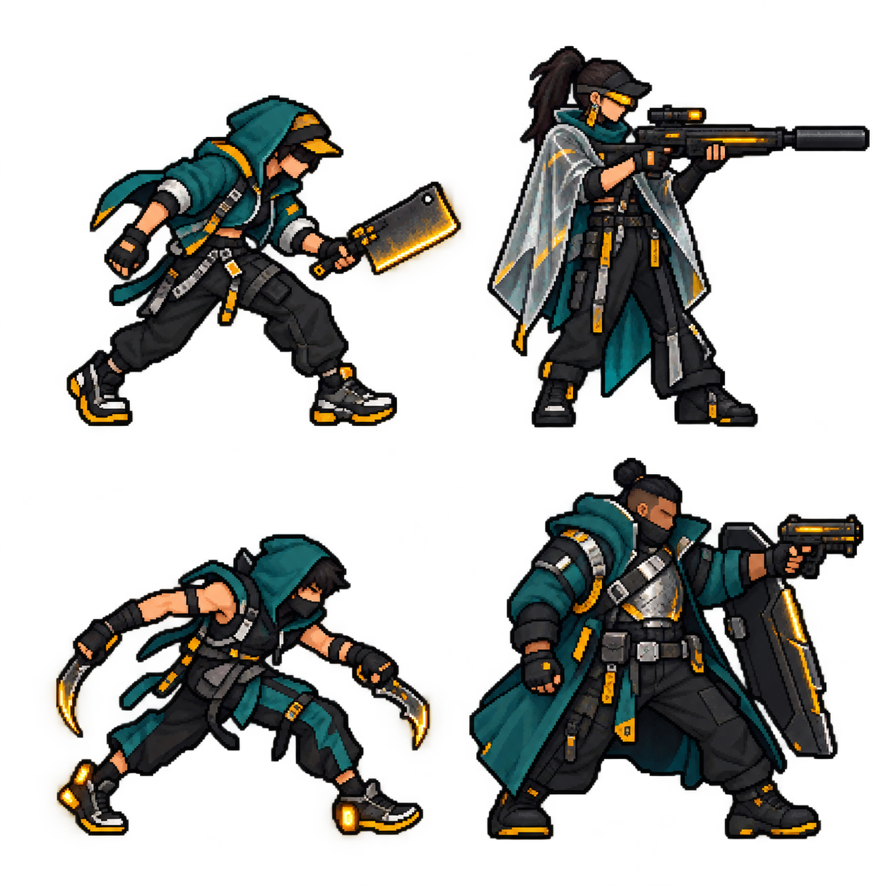

ÁREA 01
Mercado de Chuva
Átrio corporativo abandonado tomado por barracas, toldos transparentes, passarelas molhadas e vitrines quebradas. Espaço largo, coberturas baixas e emboscadas atrás das bancas.
PRESSERCourier com cutelo elétrico.
ATIRADORLookout de capa translúcida e rifle longo.
FLANKERCorredor baixo com duas lâminas curvas.
CAPITÃOWarden largo com escudo dobrável e pistola.
CONCEPT · AGUARDANDO ANIMAÇÃO